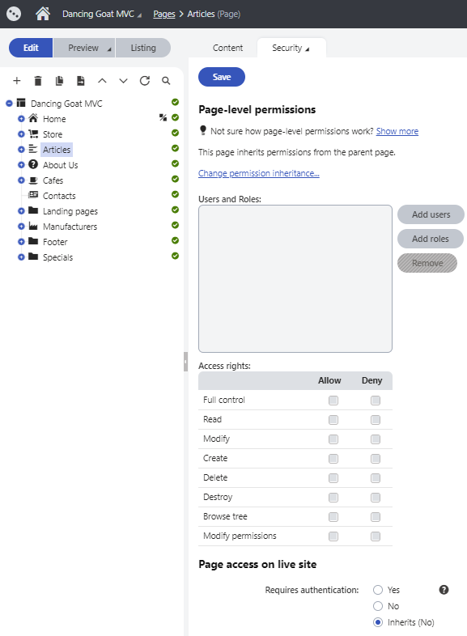

Copy of Page-level permissions (ACLs)
You can manage page-level permissions (i.e., permissions for a particular page or a particular website section) in the Pages application on the Properties -> Security tab. Page-level permissions are combined with content and page type permissions when checking if a user is permitted to perform an action with a page. The most restrictive permission prevails.
Applying page permissions
Page permissions can be checked and applied in various places, depending on your system configuration:
Administration interface
Page permissions are always applied for users when working with pages in the administration interface.
If you also want the system to filter the pages displayed to editors in the content tree according to the configured permissions:
Open the Settings application.
Select the Content -> Content management category in the settings tree.
Enable the Check page permissions setting for your site.
Click Save.
The Pages application now filters pages for each user based on the Read permissions assigned to pages. This includes the content tree, page listing mode, and also other dialogs listing pages outside of the Pages application.
If a user has the Read permission for a child page and not for its parent, the child page is not displayed. If a user does not have the Read permission for any page at all, an "unauthorized" message is displayed instead of the content tree.
Live site
To apply page permissions to visitors and users viewing the live site:
Open the Settings application.
Select the Security & Membership category in the settings tree.
Configure the Check page-level permissions setting for your site.
Select either the All pages or Secured areas option.
Click Save.
Page-level permissions are then reflected on the live site depending on the routing scheme of your website:
Content tree-based routing – page permissions are automatically reflected on your live site.
Custom routing – for page-level permissions to have an effect on your website, developers need to use the appropriate API when loading and displaying pages in the site's code. See Implementing page permission checks.
If you are not sure which routing scheme is used on your website, see the Routing mode setting in the Settings -> URLs and SEO category, or consult your website developers.
Files
To apply a page's permissions to its attachment files whenever a user requests an attachment:
Open the Settings application.
Select the System -> Files category in the settings tree.
Enable the Check attachments permissions setting for your site.
Click Save.
Configuring page-level permissions
To configure page-level permissions:
Open the Pages application.
Select a page in the content tree and access the Properties -> Security tab.
Select the appropriate users or roles using the Add users and Add roles buttons.
For each user or role, configure the permissions (access rights) to be either allowed or denied:
Allow – the action is allowed for the user or role.
Deny – the action is not allowed even if the user or role has the permission assigned on a global level. The Deny option overrides settings for this permission on the other two levels.
Click Save.

Configuring page-level permissions
The following permissions can be allowed or denied:
|
Full control |
Allows the user or members of the role to perform any action with this page. |
|
Read |
Allows the user or members of the role to view this page. |
|
Create |
Allows the user or members of the role to create new pages under this page. |
|
Modify |
Allows the user or members of the role to edit this page. |
|
Delete |
Allows the user or members of the role to delete this page. |
|
Destroy |
Allows the user or members of the role to destroy this page, i.e., delete without the Undo option. |
|
Browse tree |
Allows the user or members of the role to see pages found under this page in the content tree. |
|
Modify permissions |
Allows the user or members of the role to manage page-level permissions of this page on the Properties -> Security tab. |
Note: By default, the permission matrix is blank for all pages, meaning users are forbidden from all actions (for example, reading or modifying page content).
Permission inheritance
You will typically need to set up permissions for site sections rather than for particular pages. In this case, you can grant permissions for the section's parent page and inherit them by all child pages.
Example
Consider the following website structure:
Root
Home
News
Products
Category 1
Category 2
You may want to grant the following permissions to the users:
|
JohnS |
Marketing manager John can manage all content. |
Grant the Full control permission on the root to the user. Alternatively, you can grant permissions for the Content module to some of the user's roles in the Permissions application. |
|
MarkJ |
Product manager Mark can manage only the pages in the /Products section. |
Grant the Browse tree permission on the root to the user so that they can browse the Products section. Grant the Read, Modify, Create, Delete, Destroy and Browse tree permissions on the /Products page to the user. These permissions are inherited by all child pages under the /Products section. Note: if you click the /Products/Category 1 page, the Browse tree permission is grayed and disabled. It means that this permission is inherited and cannot be removed – you can only deny the permission (unless you break inheritance - see below). |
|
AliceM |
Copy writer Alice can modify the copy of all pages, but Mark prefers to manage the copy of the /Products section by himself only. |
Grant the Read, Modify, Create, Delete and Browse tree permissions for the root to the user. Go to the /Products page and deny the Modify, Create, Delete permissions to the user so that Alice cannot modify the copy in the /Products section. |
We recommend that you configure local permissions for roles and then only assign users to the appropriate roles. In this example, you would first create the "Marketing manager", "Product manager" and "Copy writer" roles and then configure their permissions.
Changing permission inheritance
In case you need to break permission inheritance and configure different permissions for certain site sections, click the Change permission inheritance... link on the Properties -> Security tab of the Pages application.
If permissions are inherited by the current page, the following two options will be offered:
Break inheritance and copy parent permissions – breaks inheritance and adds parent permissions to the page, while original permissions configured for the page are preserved.
Break inheritance and remove parent permissions – breaks inheritance and removes all permissions inherited from the parent, while additional permissions configured for the page are preserved.
If you decide to inherit the permissions from the parent again, click the Change permission inheritance... link again. This time, the following two options will be offered:
Restore inheritance to parent page permissions (current page only) – makes the current page inherit permissions of the parent page.
Recursively restore inheritance to parent page permissions (current and all child pages) – makes the current page and all its child pages inherit permissions of the parent page, while only pages which do not inherit parent permissions are affected by this action.
Copying permissions along with pages
If you copy, move or link a page in the Pages application, its permissions can be transferred along with it. You only need to enable the Copy/Preserve page permissions option in the dialog displayed when copying/moving/linking a page.
This applies only to permissions configured for the particular page. Parent or inherited permissions are not transferred. If you leave the option disabled, the new page will inherit permissions from its parent in the target location.
Creating authenticated sections
You may want to restrict non-authenticated users from accessing some pages or whole sections on the live site. You can do so by creating so-called secured areas, or authenticated sections. Users will be prompted to sign in when accessing pages in such sections and non-authenticated users will not be allowed to see the pages at all.
To configure a page to require authentication:
Open the Pages application and select the desired page in the content tree.
Switch to the Properties -> Security tab.
Navigate to the Requires authentication property and select Yes.
Click Save.
By default, each page inherits the Requires authentication property from its parent page. Configuring one page to require authentication thus creates an authenticated section with all its child pages. If you wish to secure only an individual page without its child pages, you can break this inheritance by configuring the property for each child page separately.
If your website uses content tree-based routing, authenticated sections are automatically enforced on the live site according to the Requires authentication property of each page.
If your website uses custom routing with page type URL patterns, developers need to use the appropriate API when displaying pages to check and enforce authenticated sections on the live site. See Implementing page permission checks.